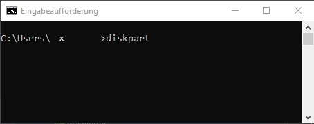
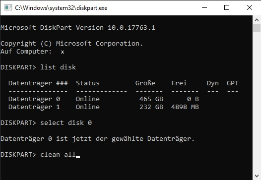

Diskpart & dd - Datenträger formatieren |
Virtual Machines & Sandboxen |
Multiboot-System
Java Scrypt & Python - Basics |
Login ohne Passwort - Win & Linux |
Android - ADB Tools
Raspberry Pi - Putty & SSH |
Raspberry Pi - Squid3 Proxy |
Raspberry Pi - GPIO Skripts
Diskpart ist das Windows-eigene Programm zum Formatieren von Datenträgern.
Man öffnet es über die CMD-Eingabeaufforderung mit dem Befehl diskpart.

Zuerst lässt man sich alle Datenträger anzeigen mit list disk.
Dann selektiert man den gewünschten Datenträger mit select disk und dessen Nummer.

Auf Datenträger sind Partitionen. Auf Partitionen sind Volumen.
Beides lässt sich mit dem list-Befehl anzeigen (wenn der Datenträger selektiert wurde).
Der einfachste Weg um dann diese beiden Formatierungen, sprich "alles" zu löschen
geht mit dem clean all Befehl. Anschließend muss der Datenträger für
seine weitere Verwendung "neu formatiert werden", so bekommt er eine frische Partition
mit freiem Volumen (Speicherplatz).
dd (Disk Dump) ist die Linux Variante. Achtung! Hier kann ein Fehler großen Schaden anrichten.
Man kann ganze Festplatten und Partitionen löschen oder klonen und mehr. Die Syntax vom dd-Befehl ist folgende:
dd if=[input file] of=[output file] <Optionen>
dd if=/dev/sda of=/dev/sdb bs=BYTE
Eine wichtige Rolle beim Formatieren spielt das gewählte Datei-System.
FAT32/exFAT ist der Standard für USB-Sticks und andere "Wechseldatenträger".
Es wird von den meisten Systemen unterstützt/erkannt, hat aber einige Beschränkungen.
NTFS dagegen ist für Betriebssysteme geeignet, da es Eigenschaften wie Blockeinträge,
Zugriffsberechtigung, Datum usw. in einem reservierten MFT (Master File Table) abspeichert.
Es sind mehrere Partitionen gleichzeit möglich und das Limit für Dateigrößen ist über 4 GiB.